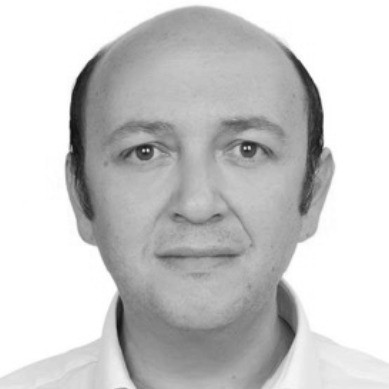

Director, Electronic Warfare & Self-Protection Systems
tayfunaytac@gmail.com · tayfun.aytac@tubitak.gov.tr
İlhan TAN Kışlası, Ümit Mahallesi, 06800 Ümitköy / Ankara / Türkiye · Tel: +90 312 291 60 00
Defense R&D executive with 25+ years leading national-scale Electronic Warfare (EW) programs at TÜBİTAK BİLGEM İLTAREN, Türkiye's Electronic Warfare Research Institute.
Leading a multidisciplinary organization of 300+ staff (researchers, engineers, and technicians), driving complex EW system architectures for aerial, land, and naval platforms across EO/IR and RF domains — from concept development through qualification, acceptance, and operational deployment. Multiple programs have successfully transitioned to serial production.
Co-author of 50+ peer-reviewed publications (15 journals, 35+ conferences, 349 citations, h-index: 13) in infrared sensor-based target detection and tracking.
50+ peer-reviewed publications · 349 citations · h-index: 13 | 15 SCI journal articles · 35+ conference papers
NATO & Other Refereed Publications
Conference Abstract Publications